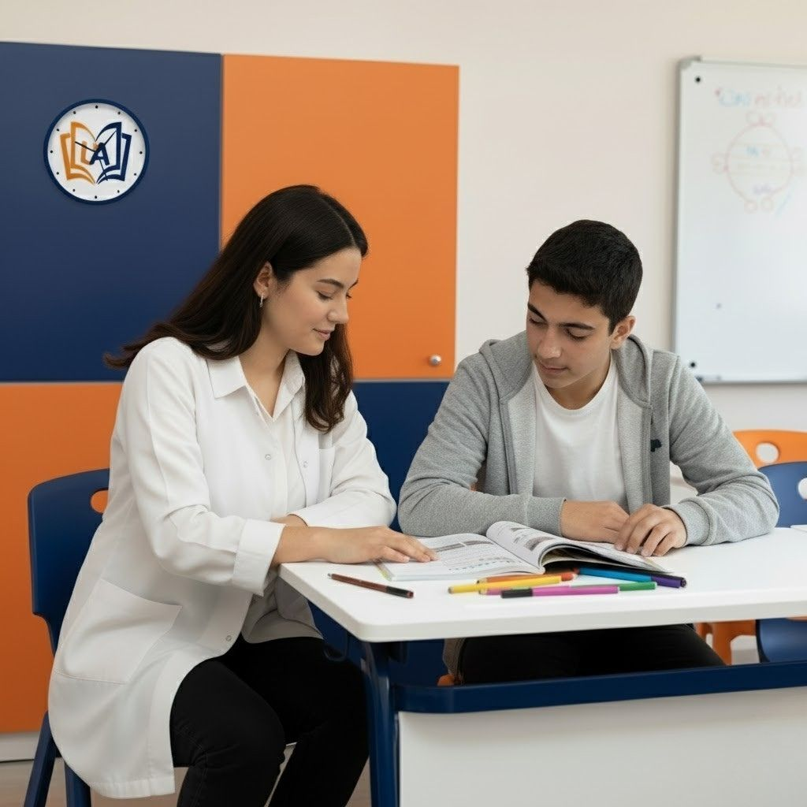

Hızlı Okuma Kursunun Sınavlara Etkisi
Günümüz şartlarında öğrenci sayılarındaki artış ve bilgiye kolay ulaşım olması, sınavlarda daha rekabetçi bir yaklaşım benimsenmesini zorunlu kılmış; bu nedenle yeni nesil olarak adlandırılan sınav sistemi eğitim hayatımıza girmiş ve beraberinde birçok değişimi de getirmiştir. Artık sınavlara hazırlanan öğrencilerimiz sahip oldukları bilgiyi sınavlarda kendilerine ayrılan kısıtlı sürede çok iyi işlemeli, hızlı okumak zorunda olduğu paragrafı geriye dönüş olmaksızın bir kerede tam olarak anlayabilmeli, eleyici soruların aldatmacasında ifadeler arasındaki örüntüyü kurabilmeli ve dikkat odaklanma seviyelerini maksimuma çıkartabilmelidir. Bu yeterliliklerden yoksun öğrenci sınav esnasında süreyi yetiştiremeyecek; karşı karşıya kalacağı odaklanma sorunu ile sınav motivasyonunu kaybedecek; kaçınılmaz olarak güven eksikliği hissedecektir. Hal böyle olunca da uzun bir yıl boyunca emek vererek belki de eksiksiz olarak kendini bilgiyle donatmış öğrenci hak etmiş olduğu başarıyı asla yakalayamayacaktır.
Uzman Akademi ile Hızlı Okuma Teknikleri
Uzman Akademi’nin sınavlara hazırlanan öğrenciler için özel olarak tasarladığı hızlı okuma ve anlama teknikleri eğitim programında sadece hızlı okuma ve anlama teknikleri alanında çalışmalar yapılmamakta, bunun yanında paragraf tekniklerinde bütünsel bir yaklaşım benimsenmektedir. Tecrübeli öğretmen kadromuzla sınav grubu öğrencilerimize yaptığımız uygulama çalışmalarının yanında özel olarak hazırlanmış dijital egzersizlerle sistemimizi ayrıca bir adım öne de çıkarmış bulunmaktayız. Sınavlara yönelik hızlı okuma kursumuzdaki temel amaç öğrencilerimizin göz kaslarını ciddi oranda geliştirerek hızlı okumalarını hedeflerken, görme alanlarını genişleterek tek bakışta metnin bütününe hâkim olmalarını sağlamaktır. Ayrıca göz tarama yöntemi ile çok hızlı okuyabilen öğrencilerimize yapmış olduğumuz özel kelime ve metin çalışmaları, onların okuduklarını anlama oranlarını ciddi oranda arttıracaktır.
Hızlı Okuma Tekniklerinin Avantajları
Hızlı okuma kurslarımız, hem sınavlara hem de sosyal hayata karşı birçok avantaj sağlar. Görsel hafızası gelişen öğrencilerimiz fotoğrafik belleğe sahip olurken özel çalışmalarımızla maksimum oranda dikkat ve odaklanma becerisine de ulaşacaktır. Diğer taraftan sınava hazırlık sürecinde olan bir öğrenci anlayarak hızlı okuma yetisine hâkim olduğunda, sahip olduğu aynı sürede daha fazla ders çalışarak verimini yükseltecektir. Bu durum ona keyif verirken başarısını kat ve kat arttıracaktır. Tüm bunların yanında öğrencilerimizde önem verdiğimiz bir diğer husus sınav motivasyonu ve süreyi verimli kullanma kazanımıdır. Eşsiz sistemimizle Uzman Akademi’den mezun olan bir öğrenci sahip olduğu süreyi en doğru şekilde kullanarak motivasyonunun asla azalmasına izin vermeyecek; %100 anlama oranı ile çok hızlı okurken ortalama bir sınavda 30-50 dakika süre kazanarak net ortalamasını ciddi oranda arttıracaktır.
